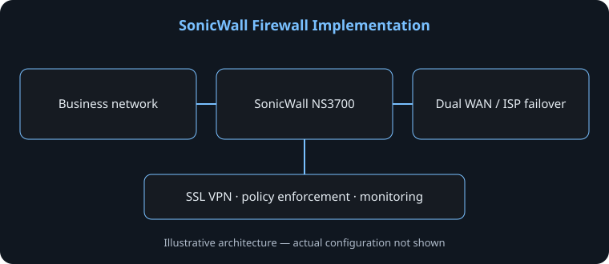

Access and remote connectivity
Firewall access rules; SSL VPN.
02 / NETWORK SECURITY / COMPLETED IMPLEMENTATION
Firewall-based network protection and centralized security administration for retail and distribution operations.

Confirmed deployment features.
Firewall access rules; SSL VPN.
Gateway Antivirus; Intrusion Prevention.
Application Control; Content Filtering; Bandwidth Management.
Dual WAN / ISP Failover; Security Monitoring.
Network boundary protection, controlled remote access and continuity during ISP disruptions are the intended benefits. No measured availability or performance improvements are claimed.
Product and enabled controls are confirmed by the project owner. Version, licensing and measured outcomes are not supplied. Public only is employer-approved evidence.
Technical documentation (Markdown)